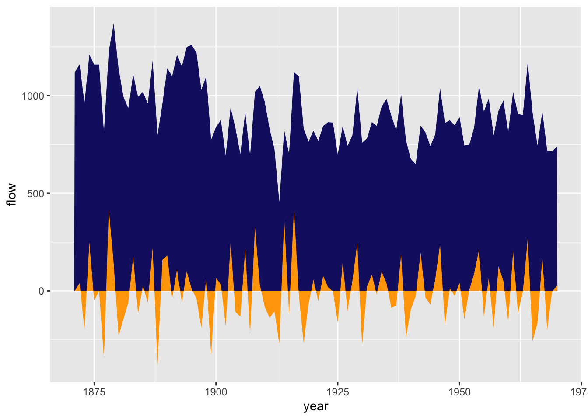
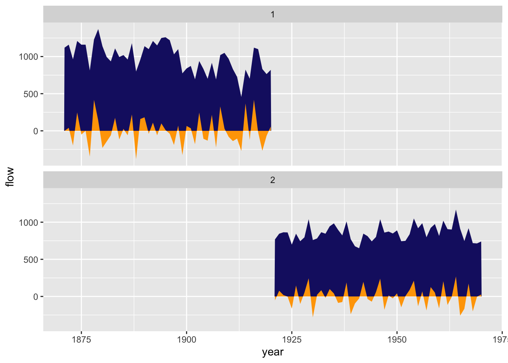
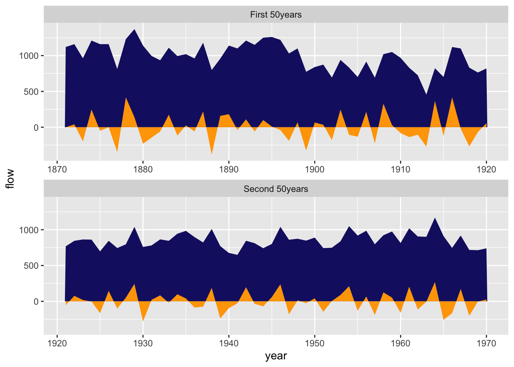
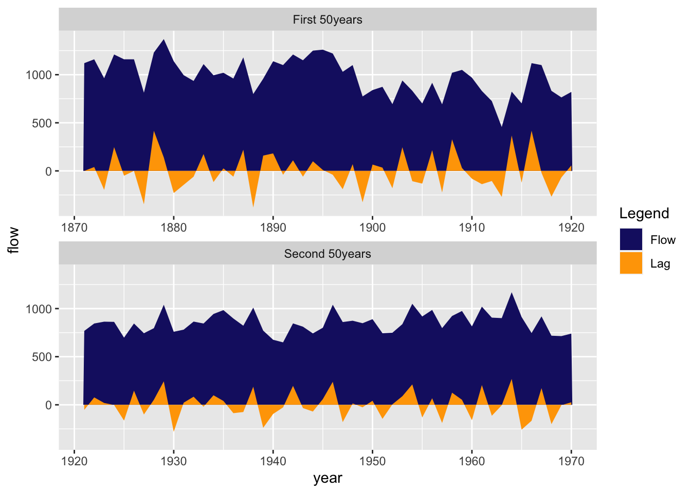
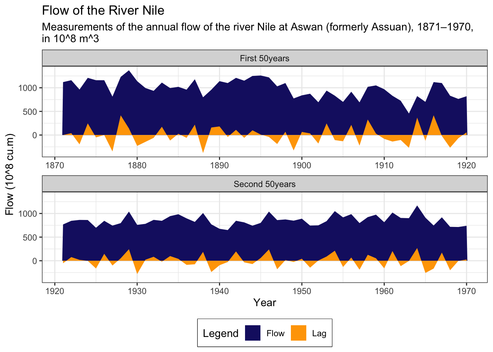

graphics.off()
rm(list = ls())
gc() used (Mb) gc trigger (Mb) limit (Mb) max used (Mb)
Ncells 578472 30.9 1318140 70.4 NA 669274 35.8
Vcells 1057767 8.1 8388608 64.0 16384 1851504 14.2Sean Ahn
August 26, 2023
In this post, I’ll talk area plot with Nile dataset. as you know, Nile is one of the famous time series dataset.
sometimes, time series dataset is hard to give message to reader.
To overcome it, I often use area plot as followings;
I usually use the following code for initialization. If you don’t want to remove plots and/or variables, you can skip it.
used (Mb) gc trigger (Mb) limit (Mb) max used (Mb)
Ncells 578472 30.9 1318140 70.4 NA 669274 35.8
Vcells 1057767 8.1 8388608 64.0 16384 1851504 14.2We want to use as few packages (some might call them “libraries”) as possible. If possible, I’m going to use only the tidyverse package. Tidyverse is one of the most famous packages in R programming, and it’s really powerful and useful.
Moreover, I loaded tsibble package. tsibble is the package to wrangle a time series dataset.
tsibble is also the one of tidyverse eco-system.
If you need to handle time series dataset with tidyverse package, tsibble definitely is a good choice.
── Attaching core tidyverse packages ──────────────────────── tidyverse 2.0.0 ──
✔ dplyr 1.1.2 ✔ readr 2.1.4
✔ forcats 1.0.0 ✔ stringr 1.5.0
✔ ggplot2 3.4.2 ✔ tibble 3.2.1
✔ lubridate 1.9.2 ✔ tidyr 1.3.0
✔ purrr 1.0.1
── Conflicts ────────────────────────────────────────── tidyverse_conflicts() ──
✖ dplyr::filter() masks stats::filter()
✖ dplyr::lag() masks stats::lag()
ℹ Use the conflicted package (<http://conflicted.r-lib.org/>) to force all conflicts to become errors
Attaching package: 'tsibble'
The following object is masked from 'package:lubridate':
interval
The following objects are masked from 'package:base':
intersect, setdiff, unionWhen I write posts in my blog, I use the built-in dataset because I don’t want the reader to suffer by having to find the data from somewhere else.
The dataset I’ll be using in this post is shown below ⬇️ .
Flow of the River Nile
Measurements of the annual flow of the river Nile at Aswan (formerly Assuan), 1871–1970, in 10^8 m^3, “with apparent changepoint near 1898” (Cobb(1978), Table 1, p.249).
Nile
A time series of length 100.
Durbin, J. and Koopman, S. J. (2001). Time Series Analysis by State Space Methods. Oxford University Press. http://www.ssfpack.com/DKbook.html
All rigth! Take a look the dataset.
Time Series:
Start = 1871
End = 1970
Frequency = 1
[1] 1120 1160 963 1210 1160 1160 813 1230 1370 1140 995 935 1110 994 1020
[16] 960 1180 799 958 1140 1100 1210 1150 1250 1260 1220 1030 1100 774 840
[31] 874 694 940 833 701 916 692 1020 1050 969 831 726 456 824 702
[46] 1120 1100 832 764 821 768 845 864 862 698 845 744 796 1040 759
[61] 781 865 845 944 984 897 822 1010 771 676 649 846 812 742 801
[76] 1040 860 874 848 890 744 749 838 1050 918 986 797 923 975 815
[91] 1020 906 901 1170 912 746 919 718 714 740I got ts object which means time series dataset. ts is a vector or matrix of the observed time-series values. And this has observation time(start, end) and the number of observations per unit of time(frequency).
I’ll manipulate Nile dataset with tidyverse eco-system, so I convert ts object to tsibble object. tsibble object is form of dataframe.
# A tsibble: 6 x 2 [1Y]
index value
<dbl> <dbl>
1 1871 1120
2 1872 1160
3 1873 963
4 1874 1210
5 1875 1160
6 1876 1160then, check how big Nile dataset. it has 100 rows and 2 column. very tiny.
Name the columns “Years” for the first column and “Flows” for the second column.
# A tsibble: 6 x 2 [1Y]
year flow
<dbl> <dbl>
1 1871 1120
2 1872 1160
3 1873 963
4 1874 1210
5 1875 1160
6 1876 1160Now you’ve created a simple line plot with ggplot. But while a simple line plot can show variation, it doesn’t convey a message.
Readers can see that somewhere after 1875, the flow of the Nile must have dropped sharply and then increased sharply the following year. They can also see that around 1912, the flow of the Nile was the lowest we’ve ever measured.
And it looks like the flow in the first half of the measured data is higher than the flow in the second half.
I want to divide the Nile flow into two periods (first half, second half) and compare the flows, while also capturing one of the most important elements of time series data: change from before in one plot.
To do this, I’ve create two more column with mutate() function. The grp column will distinguish whether first half or second half.
And the lag column will store the difference from the previous year.
With the availability of the tidyverse ecosystem, you can easily manipulate the shape of your data using functions like mutate.
For this reason, it is convenient to use time series data in tsibble objects.
df1 <-
df |>
mutate(grp = cut_number(year, 2, labels = FALSE),
lag = difference(flow, default = 0))
df1# A tsibble: 100 x 4 [1Y]
year flow grp lag
<dbl> <dbl> <int> <dbl>
1 1871 1120 1 0
2 1872 1160 1 40
3 1873 963 1 -197
4 1874 1210 1 247
5 1875 1160 1 -50
6 1876 1160 1 0
7 1877 813 1 -347
8 1878 1230 1 417
9 1879 1370 1 140
10 1880 1140 1 -230
# ℹ 90 more rowsI got area plot with df1 dataset.
flow colored midnight blue and lag colored orange place in one plot.
df1 |>
ggplot(aes(year)) +
geom_area(aes(y = flow), fill = "midnightblue") +
geom_area(aes(y = lag), fill = "orange")
To make it easier to understand, I’ve divided it into two parts, the first half and the second half. I then use the facet_wrap() function to place the first 50 years on top and the second 50 years on the bottom.
To make it easier to distinguish between the first and second halves, I created a grp column when manipulating the data, assigning a value of 1 to data in the first half and a value of 2 to data in the second half.
df1 |>
ggplot(aes(year)) +
geom_area(aes(y = flow), fill = "midnightblue") +
geom_area(aes(y = lag), fill = "orange") +
facet_wrap(vars(grp), ncol = 1)
I’ve used the facet_wrap() function to divide the first half and second half, but the labels are difficult to understand because they take the data values as they are. Maybe lots of readers can not notice “1” means first half.
Therefore, to change the labels to make the graph easier to understand, we have used labeller() like below.
df1 |>
ggplot(aes(year)) +
geom_area(aes(y = flow), fill = "midnightblue") +
geom_area(aes(y = lag), fill = "orange") +
facet_wrap(vars(grp), ncol = 1, scale = "free_x", labeller = labeller(grp = grp_status))
I’ve put legend to understand what each colored area means.
df1 |>
ggplot(aes(year)) +
geom_area(aes(y = flow, fill = "Flow")) +
geom_area(aes(y = lag, fill = "Lag")) +
facet_wrap(vars(grp), ncol = 1, scale = "free_x", labeller = labeller(grp = grp_status)) +
scale_fill_manual(name = "Legend", values = c("Flow" = "midnightblue", "Lag" = "orange"))
The first 50 years of the 100-year period saw more change, while the second 50 years saw less change.
And by looking at the lag area, colored orange, readers can also see when there was a large change in flow.
At the end of this process, I get a plot like the one below. It can easily convey more information compared to a simple line plot.
df1 |>
ggplot(aes(year)) +
geom_area(aes(y = flow, fill = "Flow")) +
geom_area(aes(y = lag, fill = "Lag")) +
facet_wrap(vars(grp), ncol = 1, scale = "free_x", labeller = labeller(grp = grp_status)) +
scale_fill_manual(name = "Legend", values = c("Flow" = "midnightblue", "Lag" = "orange")) +
labs(title = "Flow of the River Nile",
subtitle = paste0("Measurements of the annual flow of the river Nile at Aswan (formerly Assuan), 1871–1970,","\n" ,"in 10^8 m^3"),
x = "Year", y = "Flow (10^8 cu.m)") +
theme_bw() + theme(legend.position = "bottom",
legend.box.background = element_rect(colour = "black"))
END OF POST